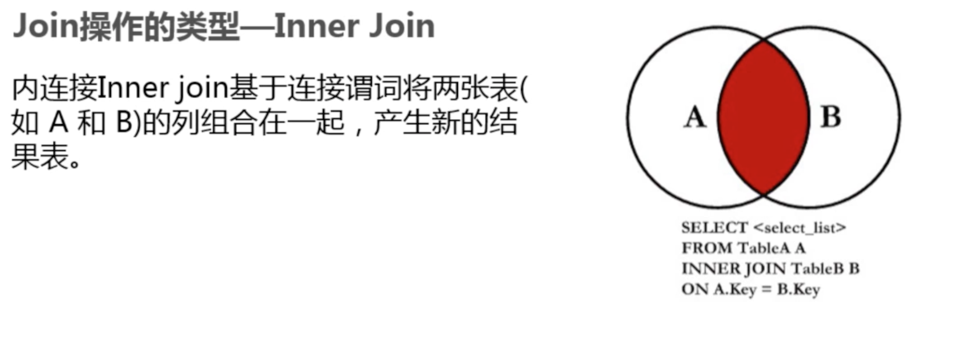

正确使用join从句#
1. SQL标准中Join的类型#

2. Inner Join(内连接)#
2-1: 什么inner join？#

2-2: 实例演示#
select a.user_name, a.over, b.over from user1 a inner join user2 b on a.user_name = b.user_name;
3. Left Outer Join(左外连接)#
3-1: 什么左外连接#
3-2: 实例演示#
# 查询出user1表中的信息，如果user2在user1中没有，以NULL的显示。 select a.user_name, a.over, b.over from user1 a left join user2 b on a.user_name = b.user_name; # 查询出user1表的信息，以及user2在user1中有的 select a.user_name, a.over, b.over from user1 a left join user2 b on a.user_name = b.user_name where b.user_name IS NOT NULL;
4. Right Outer join (右外连接)#
4-1：什么是右外连接#

5. Full join 全连接#
5-1： 什么是全连接#

5-2：Full join 带来的问题#

5-3： union all合并解决问题#